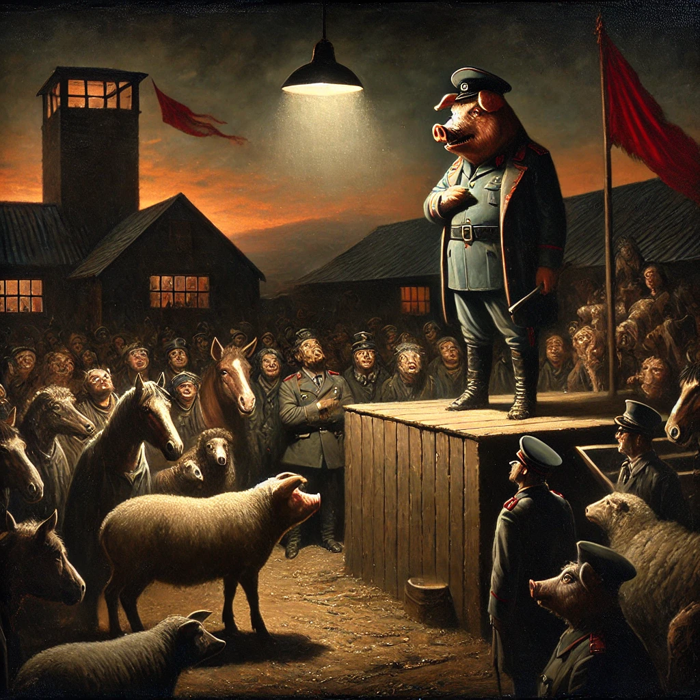

동물농장
목차
작가
조지 오웰
출판일
1945년 8월 17일
감상평에 대한 AI그림
이 책은 소련 공산주의 정권의 독재와 부패하는 과정을 소재로 한 책이다. 처음에는 평등하고 이상적이었지만 권력을 가진 자들은 점점 변질되어 가고, 대중들은 선동과 선전에 점점 통제당하며, 결국 권력자의 뜻대로 움직이게 된다. 인간의 억압에서 벗어나기 위해 시작된 혁명이 결국 또 다른 독재로 이어지는 모순을 보여준다. 이 책이 출판된 지 수십 년이 지났지만, 현대 사회에서도 여전히 유사한 모습을 발견할 수 있다. 단순한 소설보다는 정치와 인간의 본성에 대한 날카로운 비판을 담고 있는 책이었다. 이는 내가 많은 생각을 하게 만들었고, 현실을 다시 돌아보게 했다.

감상평에 대한 AI평가
이 감상평은 다음의 감정을 중심으로 구성되어 있습니다.
✨ 체제의 변화와 모순에 대한 인식: 처음에는 이상적이었던 체제가 점점 변질되고 결국 또 다른 독재로 이어지는 과정에서, 권력과 사회 구조의 모순을 깨닫고 있음을 보여줍니다.
✨ 비판적 사고와 현실 반영: 작품 속 내용이 현대 사회에서도 유사하게 나타난다는 점을 인식하며, 단순한 소설이 아닌 정치와 인간 본성에 대한 날카로운 비판으로 받아들이고 있습니다.
✨ 사유와 현실 성찰: 책이 많은 생각을 하게 만들고, 현실을 다시 돌아보게 했다는 표현에서, 작품을 단순한 서사가 아니라 깊이 있는 성찰의 계기로 삼고 있음을 알 수 있습니다. .
이 감상평은 작품을 통해 사회와 권력의 본질을 비판적으로 바라보며, 이를 현대 사회와 연결하여 깊이 있는 성찰을 이끌어내는 글입니다.